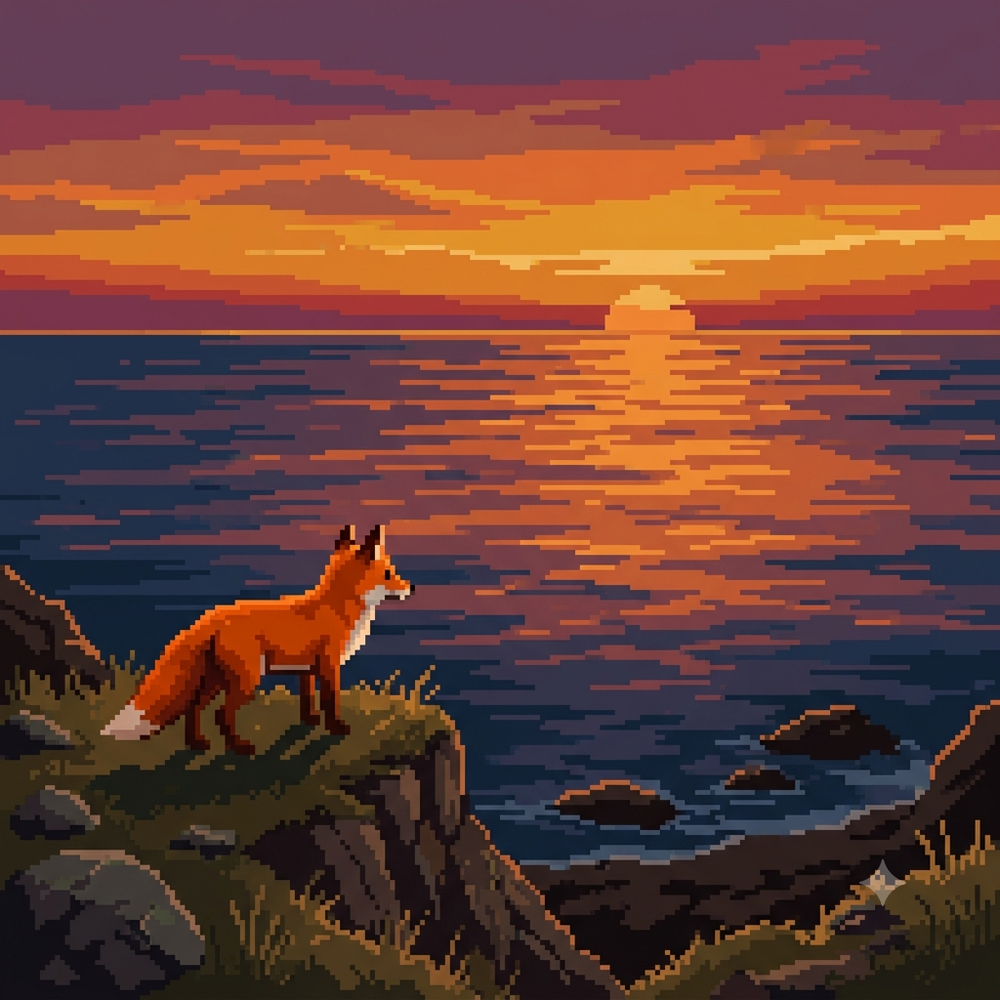

Bien venidos galerinha!
Por: Gabryelle
E aí, galera! Sejam bem vindos ao meu cantinho!!
Oie, amigos(a)! Sejam muito bem-vindos ao meu blog. Costumam me chamar de Gaby, e criei o Gabyintheworld — meu universo rosa — para ser o nosso ponto de encontro oficial para contar sobre lifestyle, moda e estética streetwear, de forma sincera e sem enrolação. No meu blog, irei soltar as melhores indicações, combinações de roupa e fazer breves resenhas sobre filmes, séries e livros, então fiquem à vontade para debater nos comentários e me contar logo de cara: Qual modelo de tênis favorito de vocês?? ��✨